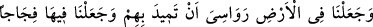
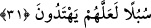
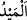

Hz. Ali: “Şu bakan gözler O’nu görmez. O’nu ancak îmanın hakîkatine eren kalbler
görür. Rabb’im birdir, ortağı yoktur. Tektir, ikincisi yoktur. Eşsizdir, benzeri yoktur.
Zaman ve mekân O’nu sınırlayamaz. Hislerlerle kavranamaz ve kıyasla ölçülemez.”
dedi.
Bunun üzerine Yemenli adam bayılarak düştü. Ayıldığı vakit: “İnad olsun diye soru
sormayacağıma dair Allâh’a söz verdim.” dedi.
Şeyh Mağribi (k.s.) şöyle der:
Önce göz iste, daha sonra cemali görmek dile
Çünkü cânân, gözü olup da hakikati farkedenlere cilve eder
Hucendî (k.s.) ise şöyle der:
Uyanık ol, sonra o cemâli iste, çünkü
Böyle uyanıklık devletini uykuda asla bulamazsın
Allah bizden örtüyü, perdeyi ve gafleti gidersin. “Müheymin” (gözetip koruyan) ve
“Vehhâb” (bol bol veren) olanın cemâli tarafına basîretlerimizi açsın. Çünkü O,
Rablerin Rabbi ve sebeplerin müsebbibi/yaratıcısıdır.
31. Onları sarsmasın diye yeryüzünde bir takım dağlar diktik. Orada geniş geniş
yollar açtık; ta ki maksatlarına ulaşsınlar.
“Onları sarsmasın diye” yerin onları sarsıp çalkalamasını istemediğimizden
“yeryüzünde bir takım” sâbit “dağlar diktik.”
Arz (yeryüzü), kesif bir cisimdir. Cisimlerin en kesif olanıdır. Âlemin merkezinde
durmaktadır. Altı yönün durumlarını açıklayıcıdır. Doğu, güneşin ve ayın doğduğu
yöndür. Batı ise, bu ikisinin battığı taraftır. Kuzey, Cedy yıldızının yörüngesinin olduğu
taraftır. Güney ise Süheyl yıldızının yörüngesinin olduğu yöndür. Üst, okyanusu izleyen
kısımdır. Alt ise, yerin merkezine doğru olan cihettir.
“
” yeryüzünün sarsılması gibi büyük bir şeyin sarsılması demektir.İbn Abbas
(r.anhümâ) şöyle demiştir: “Yeryüzü, su üzerine yayılmış/döşenmiştir. Yeryüzü,
üzerindekileri suyun üzerindeki geminin sallanıp durması gibi sarsardı. Bunun üzerine
Allah, ona sâbit dağları gönderdi de demir atan gemiler gibi sâkinleşti.”
Hz. Ali (r.a.)’a: “Yaratılanlar içinde en güçlü olan hangisidir?” diye soruldu.
“Yaratılmışların en güçlüsü sâbit dağlardır. Demir ise onlardan da güçlüdür. Çünkü